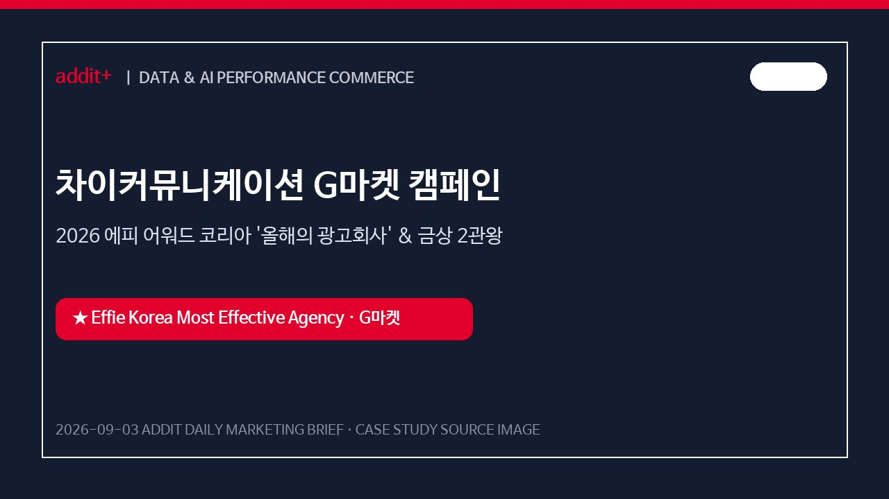
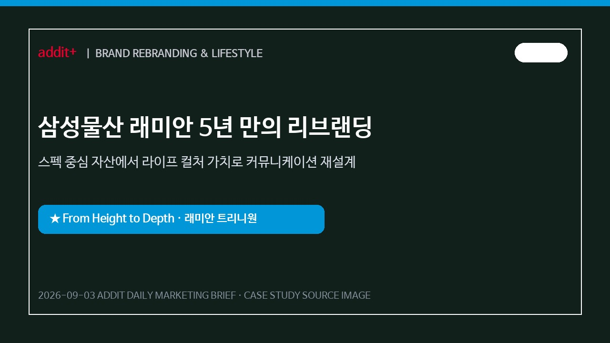
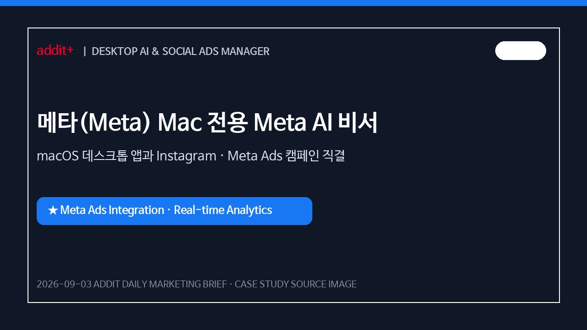
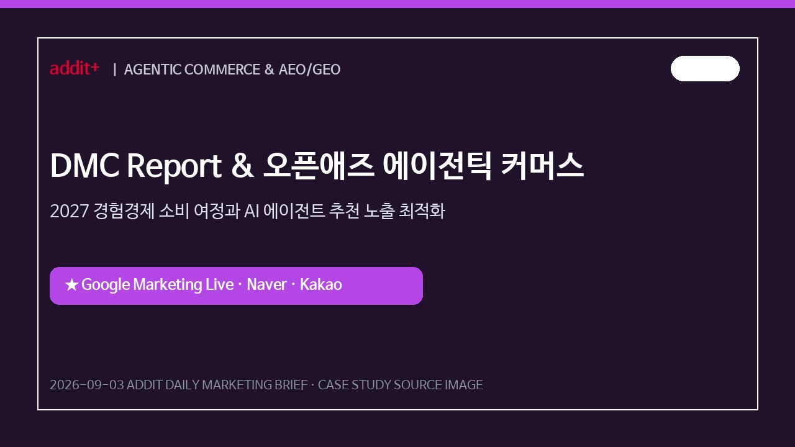
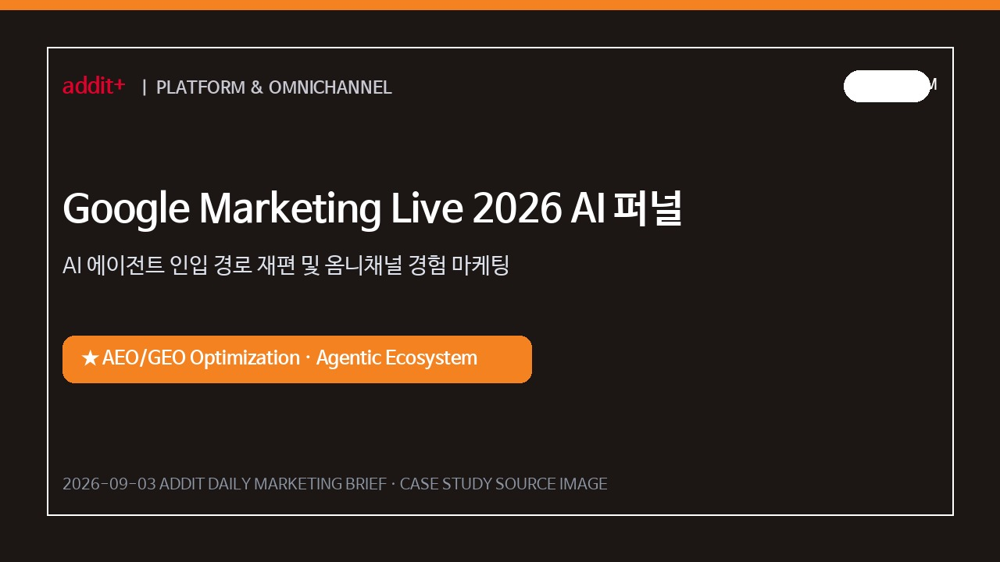
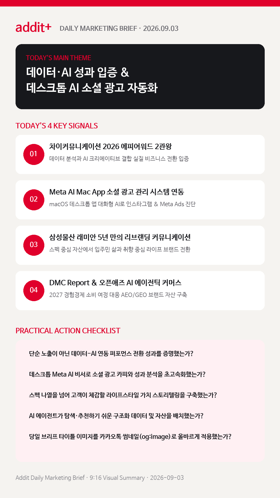

01
데이터·AI 기반 디지털 커머스 실질 성과 입증 캠페인이 최고 평가를 받는다
단순 노출을 넘어 데이터 분석과 생성형 AI 크리에이티브를 결합해 실제 전환·매출 성과를 입증한 캠페인이 시장을 주도합니다. (2026 EFFIE KOREA)
차이커뮤니케이션 2026 에피어워드 2관왕, 삼성물산 래미안 리브랜딩, Meta AI Mac App 소셜 광고 연동, DMC Report 에이전틱 커머스 성과 전략을 한눈에 확인합니다.
단순 노출을 넘어 데이터 분석과 생성형 AI 크리에이티브를 결합해 실제 전환·매출 성과를 입증한 캠페인이 시장을 주도합니다. (2026 EFFIE KOREA)
Mac 전용 Meta AI로 Instagram 및 Meta Ads 데이터를 대화형으로 실시간 진단하고 카피·보고서 제작을 자동화합니다. (TECHCRUNCH)
아파트 외관·입지 중심 커뮤니케이션에서 삶의 깊이와 취향, 시간을 전달하는 라이프 컬처 브랜드로 리브랜딩을 추진합니다. (조선비즈 & 아주경제)
소비자의 탐색·비교가 AI 에이전트를 통해 이루어지는 환경에 맞춰 브랜드 데이터의 에이전트 인입 최적화(AEO/GEO)를 구축합니다. (DMC REPORT & OPENADS)
구글, 카카오, 네이버의 AI 파이프라인과 소셜 미디어를 통합 연동해 구매 경험 단계를 단축시킵니다. (OPENADS)

KOREA데이터 기반 사용자 행동 분석과 생성형 AI 디지털 크리에이티브를 결합해 디지털 커머스 퍼널 최적화 성과를 입증했습니다.

KOREA입지·외관 중심 자산적 커뮤니케이션에서 고객의 삶과 취향을 담아내는 라이프스타일 가치 중심 리브랜딩을 펼쳤습니다.

GLOBAL데스크톱 화면 읽기 및 광고 계정 직접 연동을 통해 실시간 캠페인 진단, 소셜 광고 카피·보고서 제작을 초고속 자동화했습니다.

GLOBALAI 에이전트가 소비자 대신 탐색·비교를 실행하는 환경에 대비해 브랜드의 구조화 데이터 및 오리지널 콘텐츠 자산을 확보했습니다.

PLATFORM포털 및 소셜 미디어 플랫폼의 AI 파이프라인을 연동해 소비자 탐색부터 구매 결제까지의단계를 대폭 단축했습니다.
생성형 AI를 단순 이미지 제작에 멈추지 않고 타깃 구매 데이터와 연동된 비즈니스 전환 성과로 입증합니다.
조선비즈 에피어워드 기사 보기 →Meta AI Mac App처럼 일일 소셜 매체 광고 성과와 카피 테스트를 대화형 AI로 즉시 분석 및 자동화합니다.
TechCrunch Meta AI 보도 보기 →삼성물산 래미안 리브랜딩처럼 물리적 특징 나열보다 고객이 경험할 삶의 깊이와 라이프스타일 가치에 집중합니다.
아주경제 래미안 기사 보기 →소비자의 탐색 및 구매가 AI 에이전트를 통해 수행되는 환경에 맞춰 오리지널 정보와 구조화 데이터를 사전 정비합니다.
오픈애즈 마케팅 리포트 보기 →차이커뮤니케이션 G마켓 2026 에피어워드 코리아 2관왕 및 래미안 리브랜딩 성과를 분석합니다.
조선비즈 바로가기 →Meta AI Mac App 소셜 광고 데이터 연동 및 DMC Report 에이전틱 커머스를 확인합니다.
TechCrunch 바로가기 →
마케팅 성과는 단순 노출 중심 바이럴에서 데이터-AI 기반 실질 커머스 성과 입증, 데스크톱 Meta AI 소셜 광고 자동화, 라이프스타일 경험 스토리텔링의 통합 구축으로 완성됩니다.
{kind=link}